Elementary Blackboard Problems#
Note
One of the two main motivations for this book is to suppor the rebilding the education system in Tigray, Ethiopia, which suffered a horrific 20 year civik war from November 202- November 2022. At the time of writing this book, over 2,000 schools were closed and 2 million children out of school, most for over 2 years. Student to classroom ratios exceeded 400L1, As schools buildings were being repaired, the need for blackboards was deemed ven more basic than the need for paper and pencils for students. This book is written by and for college math teachers, some of whom are involved in pre-college level mathematics education. This section addresses the question: “If you had just a blackboard to teach elementary level math, what type of problems would you put on the board?”
Arithmetic#

1. Positive and Negative Numbers#
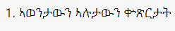{kind=link}
Note
The German mathematician Leopold Kronecker (1823-1891) said: “God made the integers; all else is the work of man.” This set of blackboard puzzles is designed to help young students understand the four basic arithmetic operations (addition, subtraction, multiplication and division) staying within the set of inegers {…-3,-2,-1,0,1,2,3,…}
{kind=link}
2. Addition#


3. Subtraction#
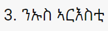 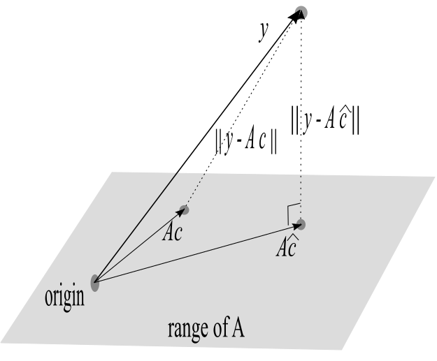{kind=link}
{kind=link}
4. Multiplication#
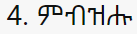 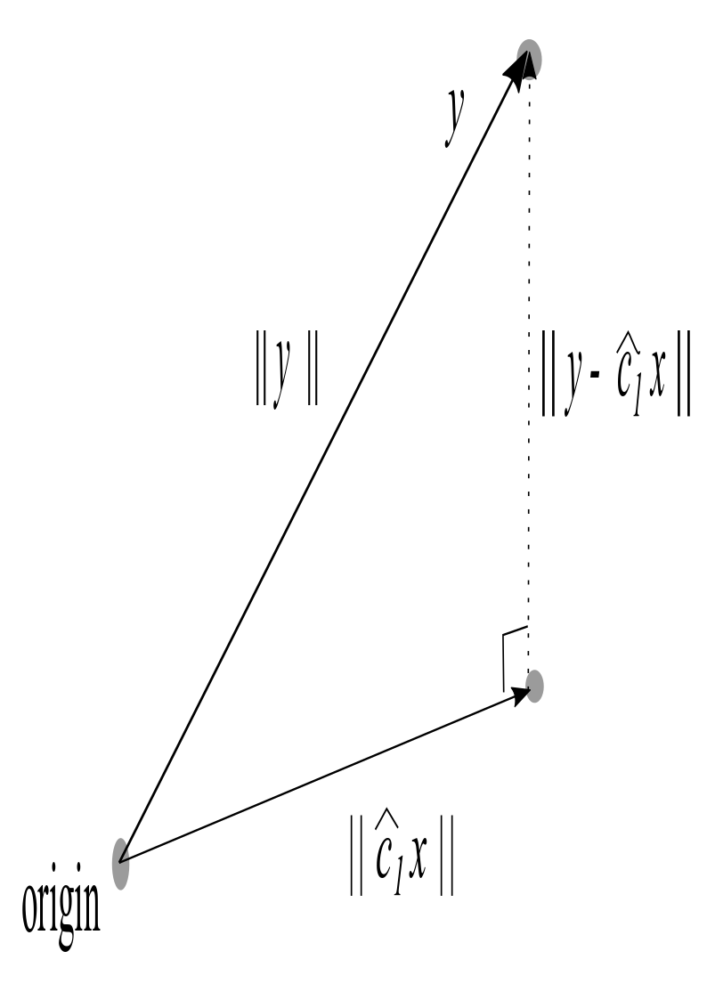{kind=link}
{kind=link}
5. Division#
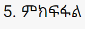{kind=link}

Pascal’s Triangle#
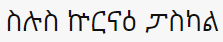{kind=link}
Note
Pascal’s triangle is used to determine the coefficients in a binomial expansion (x+y)^n.
For example, if n=1, the coefficients are 1,1: (x+y)^1= 1 x + 1 y.
If n=2, the coefficients are 1,2,1: (x+y)^2= 1 x^2 + 2 xy + 1 y^2
{kind=link}
Fractions#

Note
The tree diagram below can be used to enumerate all the positive fractions. Each fraction appears exactly once in the tree.
Subsets#

Note
Mathematics may be described as the science of patterns. In this puzzle, the pattern for subsets of a set is introduced for a 2 and a 3 element set. The student must then generalize the pattern to a 4 element set.

Vectors#
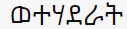{kind=link}
Note
2 dimensional (plane) vectors can be added together by adding together the respective coordinates in an (x,y) coordinate plane. Arithmetic and geometry are combined in the parallelogram representing the sum of two vectors.

Subsets#
Note
Mathematics may be described as the science of patterns. In this puzzle, the pattern for subsets of a set is introduced for a 2 and a 3 element set. The student must then generalize the pattern to a 4 element set.
Polar Coordinates#
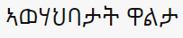{kind=link}
Note
Polar coordinates offer a different way to describe the location of a point in a plane. The concepts of distance and angle are intrinsic to polar coordinares.

Cylindrical Coordinates#

Note
Cylindrical coordinates extend the idea of polar coordinates, and introduce the idea of locating points in a 3-dimensional space.

Symmetry#

Note
A mathematical symmetry is an operation which leaves the original object unchanged. Letters in the English alphabet can be classified according to vertical symmetry (reflection across a vertical line), horizontal symmetry (reflection across a horizontal line), both, or neither.
English Alphabet
 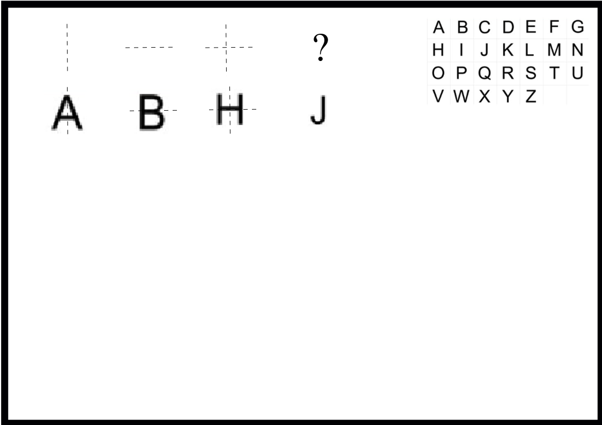
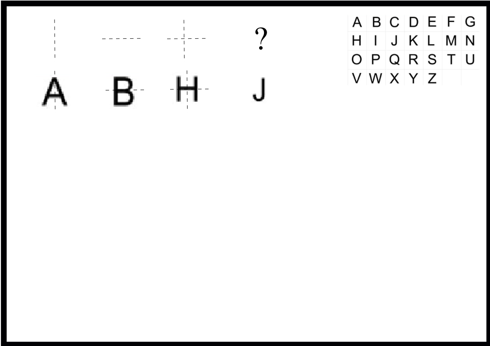
{kind=link}
Fractals#

Note
Fractal geometry creates many interesting shapes. One type of fractal pattern is obtained by an iterative process. For example, an equilateral triangle may be subdivided into 4 smaller equilateral triangles. In turn, each smaller equilateral triangle can be subdivided into 4 even smaller equilateral triangles, and so on. The goal of the puzzle is to figure out the iterative process for each row, and apply it.
{kind=link}
Trees#

Note
The goal of this puzzle is to enumerate all the different types of rooted trees with n nodes. The root of each tree is indicated by the circled node. A tree is a connected graph which has n nodes (vertices) and n-1 edges.
{kind=link}
Circuits#

Note
In a logic circuit, wires carry the values 0 (“low voltage”) or 1 (“high voltage”). Three basic gates through which wires may pass are a “NOT gate”, “AND gate”, and “OR gate”. Depending on the input value(s), the output value(s) of each type of gate are indicated by the tables below.